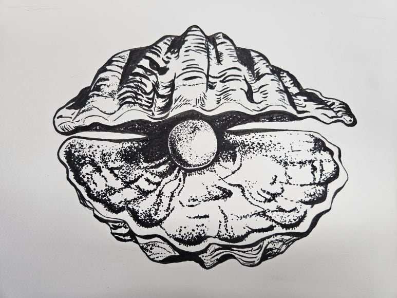

보기 드물고, 창의적이며, 특별한 감성을 가진 나만의 세계
“겉보기엔 단순해도 알고 보면 보물 같은 사람.”
소소한 하루와 아이들과의 기록
소소한 일상 속 행복과 경험들을 기록한 글입니다.
사랑스러운 아이들, 다또그와 하또그와의 소중한 기록들입니다.
배운 것을 정리하고, 정리한 것을 실천합니다
매일 경제 관련 지식을 배우고 정리한 글입니다.
경제 서적을 읽고 핵심 내용을 요약했습니다.
읽은 내용을 바탕으로 실천한 경험들을 기록했습니다.
유튜브나 강의 영상을 보고 중요 내용을 정리했습니다.
관심 있는 종목을 분석하고 탐구한 기록입니다.
새롭게 배우고 손으로 익힌 것들
새롭게 배우기 시작한 펜드로잉 작품들을 모았습니다.
AI 관련 지식을 배우고 경험한 기록들입니다.
와인에 대해 배우고 시음한 기록들입니다.
블로그 챌린지 참여 후기 및 기록입니다.
인공지능지도사 자격증 취득 과정을 기록했습니다.
행복한 꽃그림 그리기 활동 기록입니다.
마크라메와 라탄공예에 대한 배움 기록입니다.
창작 일러스트와 관련된 기록들입니다.
소묘에 대한 배움과 작품 기록입니다.
테마를 눌러 작품을 골라 보세요